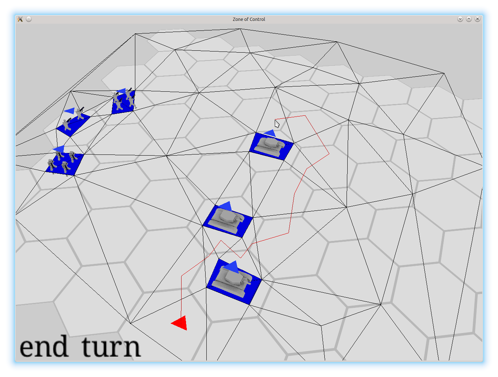
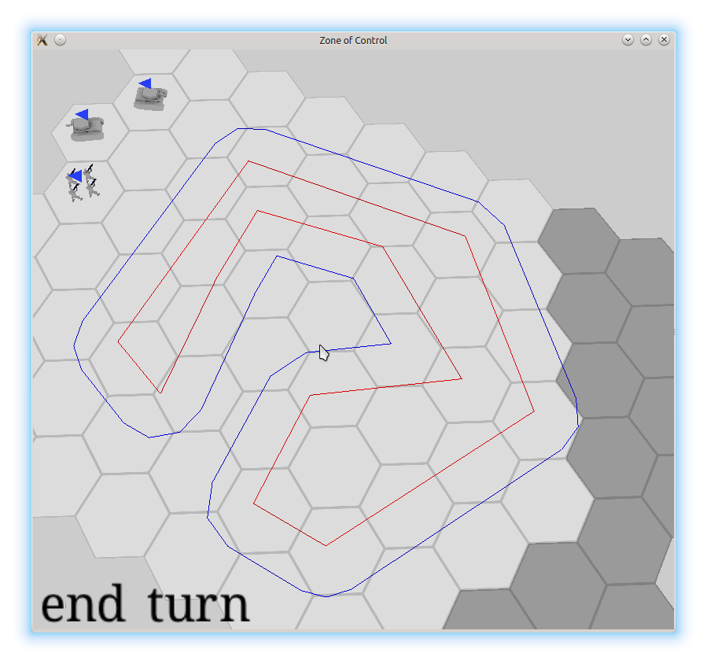

Перезапуск журнала
Пн 30 Ноябрь 2015
Насмотрелся я тут на журналы reangd, cogmind, eao197 и всякие другие, решил что тоже чего-нибудь хочу писать. С последней моей попытки прошло около полутора лет)
Итак, на момент написания прошлой заметки я работал над Миром Кораблей в питерском wargaming.net. Собственно, я успел уйти оттуда, поработать над казуалками в Zillion Whales, оттуда тоже уйти и осесть в Протее. Так что сейчас я ковыряю ip-телефонию и все игры теперь только в свободное время, зато не надо каждый день "любоваться" на ужасы фритуплея)
Я больше не студент, совсем - наконец-то закончил заочку в политехе, ура-ура! :-D Темой диплома как раз и был этот проект, даже презентация вот завалялась. Хотя ничего особо крутого, как мне изначально хотелось, на деле не вышло. Ключевым моментом диплома являлся ИИ. Я там подробно расписал какие они бывают и какие виды подходят для каких игр. А вот реализовать полноценный не успел - сдавался вариант, который только формально можно было назвать "практичным ИИ" (извиняюсь, но лучшего перевода для "utility-based AI" не нашел. "ИИ, основанный на теории полезности" как-то длинновато). Он примерял к текущему состоянию игры захардкоженные шаблоны на основе позиций и типов отрядов, оценивал коэффециент их полезности, и втупую применял их. На специально подготовленных ситуациях выглядело не так и плохо, но это отмазочный вариант, конечно. И с очень стремным кодом, так что в git'е сейчас так и лежит базовый "ИИ" - подъехать в на расстояние выстрела и стрелять :-| . Но общий обыт был интересным)
Сама ржавчина, конечно, за это время сильно выросла, с 0.10 аж до 1.4. Вместо извращений по установке зависимостей или возни с git submodules, появился cargo. По достижении 1.0 появилась обратная совместимость. Хотя конкретно от этого я и не в полном восторге, руки у авторов языка теперь "полусвязаны", но переписываний и правда стало меньше, только когда библиотеки чего-то ломают. Да и с этим Cargo.lock очень помогает. Хотя, я уже месяца полтора его не обновлял - ух и сложный же следующий cargo update у меня будет.
За полтора года я успел переиграть много во что повлияевшего на мое видение пошаговых стратегий, например:
- малоизвестная Battle Academy 2 из которой я решил фактически передрать ядро механики для тактического режима :) - взаимодействие видов войск, быстрое/осторожное передвижение, хитрая видимость, реакционный огонь, боевой дух/подавление и т.п.;
- чуть более известная Unity of Command повлияла на мое видение стратегического режима - хитрая система линий снабжения, механика окружений и т.п.;
- мобильная Uniwar - классная система параллельных сетевых игр, а сама по себе игровая механика напоминает, что шестигранникам минимализм никогда не помешает;
- серия Wargame, а именно W:AB и W:RD - одна из немногих стратегий в реальном времени, в которую я с удовольствием поиграл за долгое время. Интересна своим балансом между реализмом/"веселостью" и взаимодействием между разными видами войск.
Много думал про пошаговые игры без клеток, все-таки у клеток много недостатков/особенностей. Даже немного экспериментировал - сделал простенькое путенахождение по вручную размеченной навигационной сетке:
Путь проложен по центрам треугольников, для оптимизации потом хотел прикрутить funnel algorithm, но до этого этапа не дошло. Если что, шестигранники тут уже ничего не значат, просто на основе работающего прилжожения экспериментировал. Затем, написал простенький "наращиватель" препятствий, который в зависимости от величины угла добавлял разное количество вспомогательных отрезков:
Предполагалось, что все юниты будут поделены на несколько групп по размерам и для каждой группы будет поддерживаться своя сетка. Непосредственно преобразованием массива таких "жирных" препятствий в сетку должен был заниматься триангулятор. Мне большего всего приглянулся плюсовый poly2tri:

Даже пытался портировать его на ржавчину, но там очень стремная работа с памятью, очень хреново укладывается в модель ржавчины. Пробовал переделать плюсовую версию на работу с массивами и индексами, но потом решил что очень уж много на эксперимент уходит времени, энтузиазм про бесклеточные игры прошел, так что я совсем забросил попытку.
Ну да ладно, темы вдохновляющих игр, разных видов клеток и непрерывного пространства достойны отдельных заметок, а эта запись и так большой получается.
Теперь, наконец-то, что касается самого проекта.
Прежде всего, он переименован из Марoдера в Зону Контроля (Zone of Control). Сокращенно - ЗК/ZoC. Гитхабовское хранилище переехало в https://github.com/ozkriff/zoc.
Внешний вид с момента сдачи диплома изменился слабо и выглядит все это безобразие сейчас как-то так:
Собственно, да, я портировал это на android, хотя под линуксом и виндой тоже должно работать. Спасибо Skligus'y за его rusty-cardboard, очень помогло поначалу, и Tomaka за его glutin и android-rs-glue. К сожалению, для сборки под андроид требуется ночная сборка rustc, потому что в android-rs-glue используются какие-то нестабильные штуки. Хотя надо перепроверить, может уже и стабильного компилятора хватит - ржавчина так быстро развивается :).
Кстати, да, переписал с glfw-rs на glutin - чем больше кода на ржавчине, тем прощe, особенно при сборке на разных платформах. Еще хотел со своих костылей вокруг OpenGL перейти на glium, но пока не осилил.
Переделал с выделения через цветовой буфер на чистую математику - пересечение луча из курсора с плоскостью карты, бла бла блап. Уж очень много от времени отрисоки кадра оно сжирало, да и с шейдерами так меньше хлопот.
Но это все про техническую часть. Что касается самой игры, то:
- два захардкоженых режима на одной карте с одним набором войск - против тупого ИИ или хотсит на двух игроков;
- от одного до пяти членов отряда в клетке - отказался от идеи иметь несколько отрядов в слотах одной клетки, потому что так и не придумал, как это все нормально отображать и как этим управлять. Хотя, при введении зданий и летающих отрядов, наверное, придется тут усложнить ситуацию;
- до двух активных очков атаки для стрельбы по прямому приказу игрока;
- одно пассивное очко атаки для реакционного огня в чужой ход (как в x-com) + неиспользованные в свой ход активные очки атаки становятся пассивными;
- вероятность поражения с (пока что) захардкожеными вероятностями попадания в зависимости от типа атакующего, защищающегося и местности;
- кривоватый туман войны, который впоследствии, видимо, будут переведен на менее дискретный алгоритм;
- заготовка системы боевого духа и подавления - каждый ход восстанавливается 10 очков морали, за каждую атаку снимается по 10, если мораль падает ниже половины - отряд не может стрелять;
- разная стоимость движения по местности для разных отрядов;
- два режима передвижения - быстрый и осторожный, который стоит в два раза дороже, зато не накладывает штрафы на точность при стрельбе и при попадании под огонь отряд не лишается оставшихся очков движения;
- тестовый грузовик для транспортировки пехоты;
- механика видимости из BA2 с двумя радиусами - "нормальная" и "отличная" видимость. Последняя позволяет увидеть скрытые юниты (например, пехоту в лесу);
- атаки из засад, если атакующий изначально невидим, с бонусом к атаке и шансом не раскрыть свою позицию;
- приказ "не стрелять" для отключения реакционного огня при организации хитрых засад или для разведчиков;
- пока что только четыре вида отрядов:
- пехота - четыре человека, одна клетка отличной видимости, умеют тихориться в лесу;
- разведчики - как пехота, только всего 2 человека, зато видят и бегают немного быстрее;
- танк - громко стреляет и толсто бронирован, зато у него вообще нет отличной видимости (попробуй что через щели в броне рассмотреть) - без пехотного прикрытия рядом с лесом ему ездить не стоит;
- грузовик - не умеет стрелять, очень хрупкий и подслеповатый, зато быстрее всех остальных отрядов и может перевозить пехоту;
Ну, вот как-то так. Разработка, как видно, сильно затянулась - я-то хотел такое уже через пару месяцев иметь, ха! То ли мне просто лень, то ли времени и правда мало получается выделять, черт его знает. Уже мнооого раз полностью терял весь энтузиазм и забрасывал игру на пару месяев, даже пытался чего-то другое делать. Но потом возвращался, что бы все-таки надо довести до ума эту чертову ЗК :) . Да и вышеупомянутые игры сильно помогали с вдохновением)
Вот, собственно, вся первая запись. Вряд ли я буду теперь пытаться делать недельные отчеты, скорее буду писать более мелкие заметки по настроению - регулярность вытягивает из любого дела весь интерес. Ну и писать тут буду, наверное, не только по делу - смотрите теги :) .
blog comments powered by Disqus